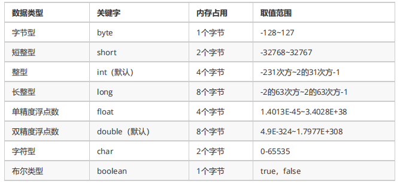

前言
JavaSE是Java开发者必须熟练掌握的基础知识，我在这里把一些平常比较容易忽视的点记录下来，以便后面查阅。
一、数据类型转换
Java数据类型主要分为两大类，基本数据类型和引用数据类型。基本数据类型分为四类八种基本类型，包括整数、浮点数、字符、布尔；引用数据类型主要为类、数组、接口等。
四类八种数据类型

1.1 自动类型转换
java在给数据类型赋值运算时，会自动将取值范围小的数据类型提升到取值范围大的数据类型（如byte、short、char运算时会自动提升为int）。
值得一提的是，b3=1+2这句，编译没有报错，前面我们说过byte、short、char运算时会自动提升为int，此时我们并没有进行强制转换，为什么没有报错呢？原因是1和2是常量，在编译时期已经确定他们相加不会超过byte的取值范围，编译器会将
他们相加的结果转为byte类型。而b4=b1+b2，编译就会报错，这是因为b1和b2是两个变量，编译器无法在编译时期确定他们的值，会将他们相加的值作为int类型处理，用byte来接收自然会报错了。
+=、-=、*=、/=这些复合赋值运算符，在运算时，会隐式的将int向下转为byte、short、char等类型，所以b4+=1语句不会报错。
1 public static void main(String[] args){
2 byte b1=1;
3 byte b2=2;
4 byte b3=1 + 2;
5 byte b4=b1 + b2;
6 b4+=1;
7 System.out.println(b3);
8 System.out.println(b4);
9 }
1.2 强制类型转换
在将取值范围大的数据类型的值赋值给取值范围小的数据类型变量时，必须进行强制转换，将取值范围大的数据类型的值转换成取值范围小的数据类型，否则编译会报错，并且转换过程中会造成一定的精度丢失。
二、 参数传递
Java方法的参数是以值的形式传递的，而不是引用传递。方法的参数类型是基本类型就传递数据值，方法的参数类型是引用类型的话传递的就是地址值。以下代码中 Dog dog 的 dog 是一个指针，存储的是对象的地址。在将一个参数传入一个方法时，
本质上是将对象的地址以值的方式传递到形参中。因此在方法中使指针引用其它对象时，那这两个指针此时指向的是完全不同的对象，在一方改变其所指向对象的内容时对另一方没有影响。
1 public class Dog {
2
3 String name;
4
5 Dog(String name) {
6 this.name = name;
7 }
8
9 String getName() {
10 return this.name;
11 }
12
13 void setName(String name) {
14 this.name = name;
15 }
16
17 String getObjectAddress() {
18 return super.toString();
19 }
20 }
21 public class PassByValueExample {
22 public static void main(String[] args) {
23 Dog dog = new Dog("A");
24 // Dog@4554617c
25 System.out.println(dog.getObjectAddress());
26 func(dog);
27 //Dog@4554617c
28 System.out.println(dog.getObjectAddress());
29 System.out.println(dog.getName()); // A
30 }
31
32 private static void func(Dog dog) {
33 System.out.println(dog.getObjectAddress());
34 // Dog@4554617c
35 dog = new Dog("B");
36 System.out.println(dog.getObjectAddress());
37 // Dog@74a14482
38 System.out.println(dog.getName()); // B
39 }
40 }如果在方法中改变对象的字段值会改变原对象该字段值，因为改变的是同一个地址指向的内容。
1 class PassByValueExample {
2 public static void main(String[] args) {
3 Dog dog = new Dog("A");
4 func(dog);
5 System.out.println(dog.getName()); // B
6 }
7
8 private static void func(Dog dog) {
9 dog.setName("B");
10 }
11 }
三、 自动装箱与拆箱
3.1 包装类型
8种基本类型都有对应的包装类型，基本类型与其对应的包装类型之间的赋值使用自动装箱与拆箱完成。例如int：
Integer x = 2; // 装箱 调用了 Integer.valueOf(2)
int y = x; // 拆箱 调用了 X.intValue()3.2 缓存池
new Integer(123) 与 Integer.valueOf(123) 的区别在于：
Integer x = new Integer(123);
Integer y = new Integer(123);
System.out.println(x == y); // false
Integer z = Integer.valueOf(123);
Integer k = Integer.valueOf(123);
System.out.println(z == k); // true
valueOf() 方法的实现比较简单，就是先判断值是否在缓存池中，如果在的话就直接返回缓存池的内容。
public static Integer valueOf(int i) {
if (i >= IntegerCache.low && i <= IntegerCache.high)
return IntegerCache.cache[i + (-IntegerCache.low)];
return new Integer(i);
}在 Java 8 中，Integer 缓存池的大小默认为 -128~127。
Integer c = 128;
Integer d = 128;
system.out.println(c==d); //false以下是8种基本类型对应的缓存范围：
四、 Java虚拟机内存分配
为了提高运算效率，Java虚拟机对内存空间进行了不同区域的划分，每一片区域都有特定的处理数据方式和内存管理方式。
4.1 Java虚拟机的内存划分
| 程序计数器（PC寄存器） | 在JVM中，多线程是通过线程轮流切换来获得CPU执行时间的，因此，在任一具体时刻，一个CPU的内核只会执行一条线程中的指令，因此，为了能够使得每个线程都在线程切换后能够恢复到切换之前的程序执行位置，每个线程都需要有自己独立的程序计数器，并且不能互相被干扰，否则就会影响到程序的正常执行次序。因此，可以这么说，程序计数器是每个线程所私有的。（给CPU使用，和开发无关） |
| 本地方法栈 |
|
| 方法区 | 方法区是线程共有的，主要存储字节码文件对象，即.class文件，方法区内还有一个静态区，主要存储静态变量和全局变量。（字符串常量池于JDK7之后移到了堆内存） |
| 堆内存 | Java堆是虚拟机管理内存中最大的一块空间，并且被所有线程共享。堆内存主要存放着程序运行时期创建的各种对象，也是垃圾收集器管理的主要区域。在 Java 中，堆被划分成两个不同的区域：新生代 ( Young )、老年代 ( Old )。新生代 ( Young ) 又被划分为三个区域：Eden、From Survivor、To Survivor。这样划分的目的是为了使 JVM 能够更好的管理堆内存中的对象，包括内存的分配以及回收。java堆的大小是可扩展的， 通过-Xmx和-Xms控制。如果堆内存不够分配实例对象， 并且也无法再扩展时， 将会抛出outOfMemoryError异常。 |
| 虚拟机栈 | Java虚拟机栈是线程私有的，线程启动时会创建虚拟机栈，每个方法在执行时会在虚拟机栈中创建一个栈帧，用于存储局部变量表（类成员变量存储于堆中）、操作数栈、动态连接、方法返回地址、附加信息等信息。每个方法从调用到执行完成的过程，就对应着一个栈帧在虚拟机栈中的入栈（压栈）到出栈（弹栈）的过程。 |
五、 String 概述
String 被声明为 final，因此它不可被继承。(Integer 等包装类也不能被继承）。在 Java 8 中，String 内部使用 char 数组存储数据。在 Java 9 之后，String 类的实现改用 byte 数组存储字符串，同时使用 coder来标识使用了哪种编码。
5.1 字符串常量池
字符串常量池（String Pool）保存着所有字符串字面量，这些字面量在编译时期就确定。如果是采用 "bbb" 这种字面量的形式创建字符串，会自动地将字符串放入 String Pool 中。
使用 new String("aaa") 这种方式一共会创建两个字符串对象（前提是 String Pool 中还没有 "abc" 字符串对象）。
1. "abc" 属于字符串字面量，因此编译时期会在 String Pool 中创建一个字符串对象，指向这个 "abc" 字符串字面量；
2. 而使用 new 的方式会在堆中创建一个字符串对象。
String s5 = "bbb";
String s6 = "bbb";
System.out.println(s5 == s6); // true不仅如此，还可以使用 String 的 intern() 方法在运行过程中将字符串添加到 String Pool 中。当一个字符串调用 intern() 方法时，如果 String Pool 中已经存在一个字符串和该字符串值相等（使用 equals() 方法进行确定），那么就会返回 String Pool 中字
符串的引用；否则，就会在 String Pool 中添加一个新的字符串，并返回这个新字符串的引用。
下面示例中，s1 和 s2 采用 new String() 的方式新建了两个不同字符串，而 s3 和 s4 是通过 s1.intern() 方法取得一个字符串引用。intern() 首先把 s1 引用的字符串放到 String Pool 中，然后返回这个字符串引用。因此 s3 和 s4 引用的是同一个字符串。
String s1 = new String("aaa");
String s2 = new String("aaa");
System.out.println(s1 == s2); // false
String s3 = s1.intern();
String s4 = s1.intern();
System.out.println(s3 == s4); // true在 Java 7 之前，String Pool 被放在运行时常量池中，它属于永久代。而在 Java 7，String Pool 被移到堆中。这是因为永久代的空间有限，在大量使用字符串的场景下会导致 OutOfMemoryError 错误。
参考：https://github.com/CyC2018/CS-Notes/blob/master/notes/Java%20%E5%9F%BA%E7%A1%80.md